Your boat's instruments,
on a €50 screen you build.
Wind, navigation, batteries, solar, tanks, anchor watch with phone alarms, AIS collision monitoring, and full sailing-performance analysis — one clean panel, running on a Raspberry Pi in your nav station. No subscription. No cloud you don't control.
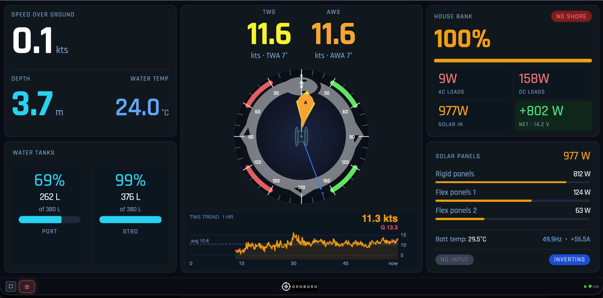
A Victron panel shows you Victron. This shows you the whole boat.
Victron's GX Touch is excellent — for Victron gear. But your wind, depth, heading, AIS, and tank senders live on the NMEA 2000 network, and the Cerbo barely speaks it. One Raspberry Pi reads everything — and costs a third as much.
Cerbo GX + GX Touch 50
- Battery, solar, and Victron devices — beautifully
- Limited NMEA 2000 — no real wind/depth/AIS dashboard
- No anchor watch with phone alarms
- No sailing-performance analysis
- Closed ecosystem, fixed feature set
Oroboro Dashboard on a Pi
- Wind, nav, depth, batteries, solar, tanks — one panel
- Reads the entire NMEA 2000 network via Signal K
- Anchor watch + AIS Guardian, alarms to your phone
- Polar performance analyzer built in
- Open source — change anything, owe nothing
Your whole boat, at a glance.
One screen brings together everything your instruments and Victron system already know — true and apparent wind on a live rose, speed, depth and water temperature, house-bank state of charge with power flowing in and out, solar yield panel by panel, and tank levels. No flipping between apps or squinting at four separate gauges: the numbers that matter are laid out the way a sailor actually reads them, updating live. It runs full-screen at the nav station, on a cockpit tablet, or on your phone — same panel, everywhere.
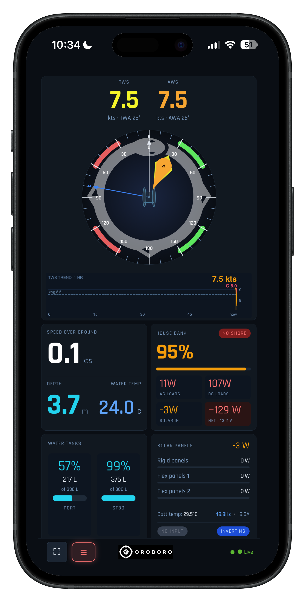
Sleep easier at anchor.
Drop the hook, set an allowed circle — or a directional sector for a tight spot — and the Pi watches your swing all night. Drift outside the zone and your phone alarms, sent straight from the boat whether or not you're aboard. Because the alarm runs on the Pi, not the browser, it reaches you ashore at the taverna too.
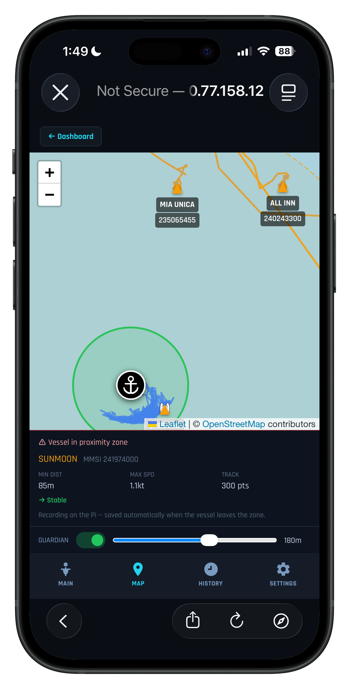
A witness that never sleeps.
Guardian watches every AIS-equipped vessel around you, day and night. A boat enters your zone — or drags down onto you at 3 a.m. — and it records a full breadcrumb track, closest approach, and top speed, then alarms your phone. Every encounter is saved as a timestamped incident report you can hand to a harbourmaster or insurer. Nearby boats even leave visible swing-arcs, so you see how the whole anchorage lies.
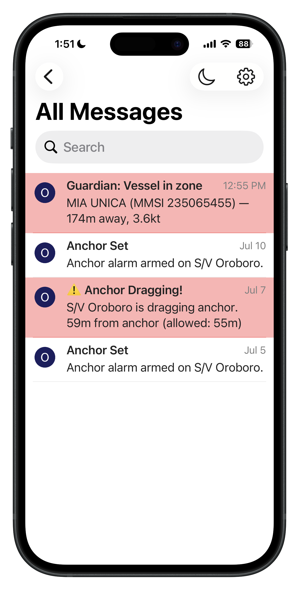
Sail closer to your boat's best.
Every sail is logged and scored against a VPP target polar for your hull. See live VMG versus target, a colour-coded performance heat-map of your track — green where you're sailing well, red where there's speed left on the table — and your personal-best envelope building up over the season. It turns a day on the water into something you can actually learn from.
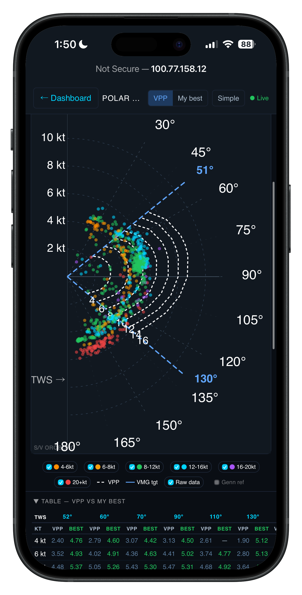
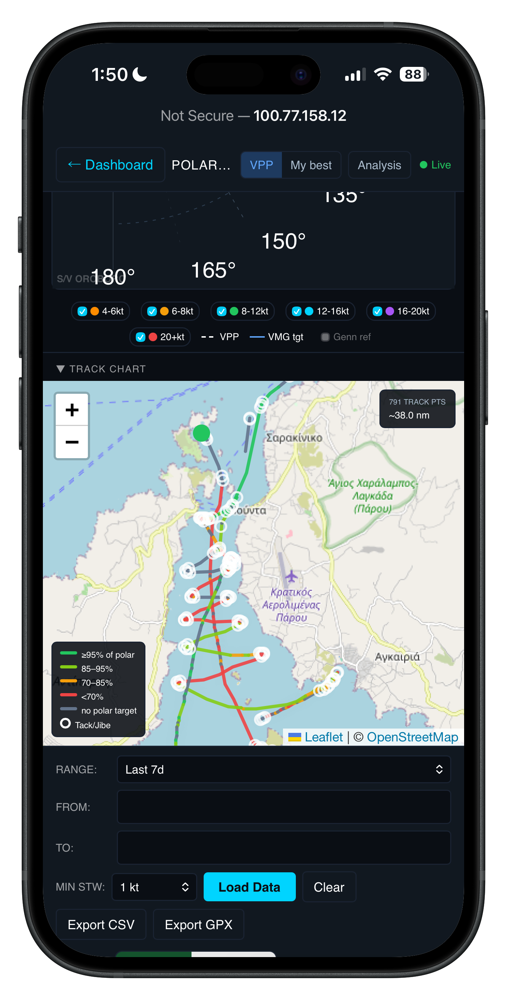
Nav station, cockpit tablet, or the phone in your pocket.
It's a web dashboard, so it runs anywhere with a browser — a fixed screen at the chart table, a tablet in the cockpit, your phone at anchor. Same live data, no app to install, shared across the whole crew.
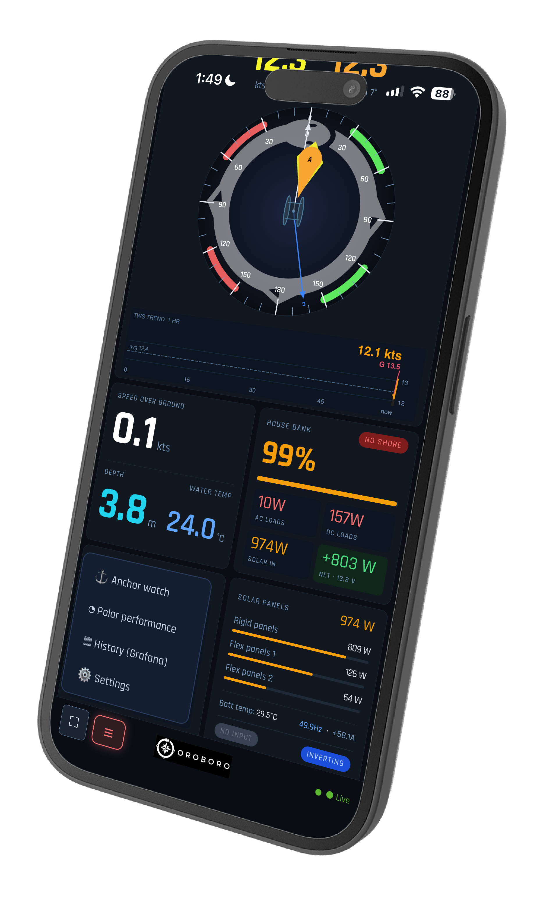
Built for the way you actually sail.
Every instrument your NMEA 2000 network already produces, plus the tools cruisers wish came standard.
Wind & nav
True and apparent wind on a clean rose, heading, SOG, COG, depth, and water temperature — the core six at a glance.
Batteries & solar
State of charge, net power in or out, voltage, and solar yield — pulled from Victron over the same network.
Tanks
Fresh water, fuel, and waste levels front and centre — with the sender options spelled out for boats that lack them.
Anchor watch
Circular or directional zones, live swing track, and phone alarms that fire from the Pi even when you're ashore.
Guardian AIS
24/7 collision and drag watch on other vessels, with breadcrumb tracks and exportable incident reports.
Polar performance
A VPP-based analyzer that scores your sailing against target speeds, logs personal bests, and shows a performance heat-map of your track.
I wanted to see my whole boat on one screen — wind, batteries, the anchor holding through the night — without buying a closed box that only spoke to half of it. So I built it on a Raspberry Pi, and now it runs every day aboard Oroboro.
The whole boat, on one screen you own.
Free, open source, and documented step by step — from which HAT to buy to the final git push. If you can follow a recipe, you can build this.
From a bare Pi to a live panel.
Every step, in order — hardware, wiring, software, and deploy. New to Raspberry Pis and Signal K? This is written for you. The full README is the deep reference; this is the friendly path through it.
What it costs
Approximate street prices, mid-2026 — they drift, so treat them as ballparks. The core electronics come in well under a Victron panel that does less.
| Item | Approx. | Needed? |
|---|---|---|
| Raspberry Pi 4 (4 GB) or Pi 5 | €60–90 | Yes |
| Quality microSD card, 32 GB+ | €10 | Yes |
| 12 V → 5 V USB-C converter, 3 A+ | €10–20 | Yes |
| Waveshare RS485 CAN HAT | €15–25 | Yes |
| Raymarine SeaTalkNG → NMEA 2000 adapter cable (the cable you cut) | €20–25 | Yes (CAN-side boats) |
| Waveshare Industrial Grade Metal Case for Pi + HAT | ~$15 | Yes |
| 4G/LTE WiFi router + data SIM | €50–150 | For remote alarms |
| Cockpit HDMI touchscreen, 7–9″ | €60–120 | Optional |
| 12 V piezo siren (continuous tone, ≥100 dB) | €8–15 | Optional |
| 5 V relay module (or MOSFET board) | €5 | Optional |
| Typical core build (optional items excluded) | €170–275 |
All software — OpenPlotter, Signal K, InfluxDB, Grafana, Tailscale, this dashboard — is free.
The parts list
At minimum you need three things: a Raspberry Pi (the computer), a way to power it from the boat's 12 V, and an interface to your instrument network. Everything else — touchscreen, 4G router, Victron cables — extends what you can see and do.
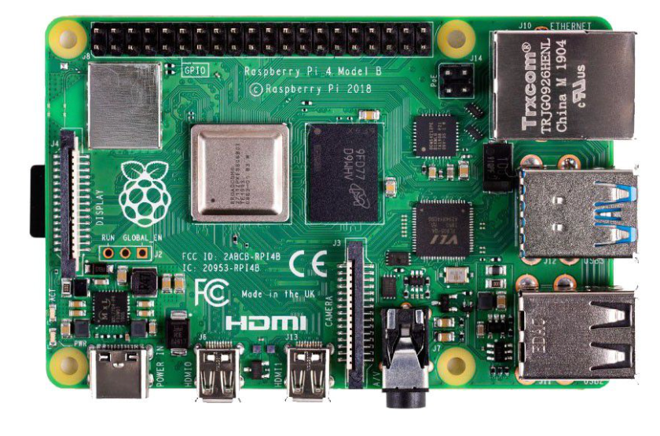
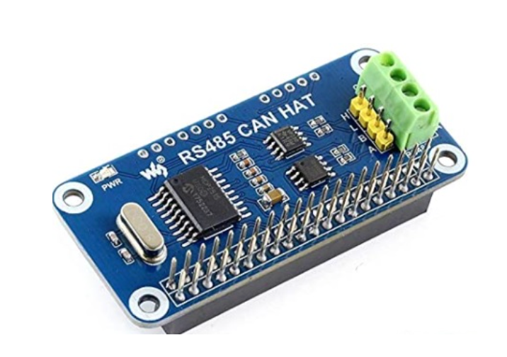
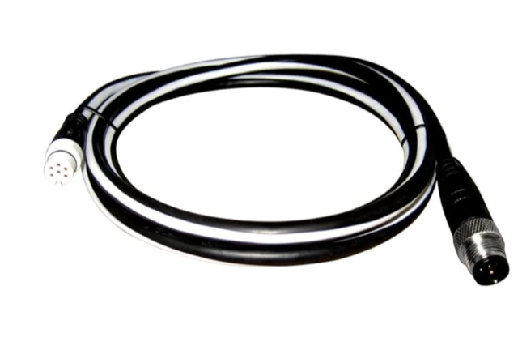
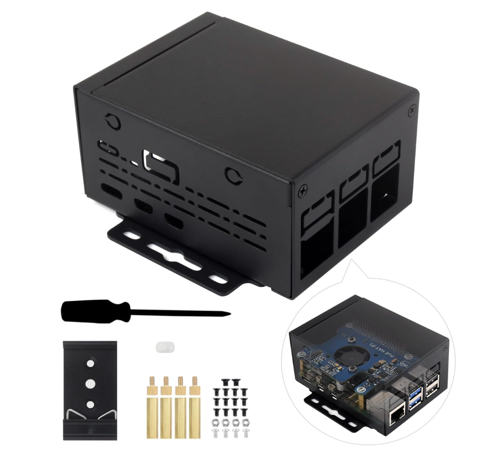
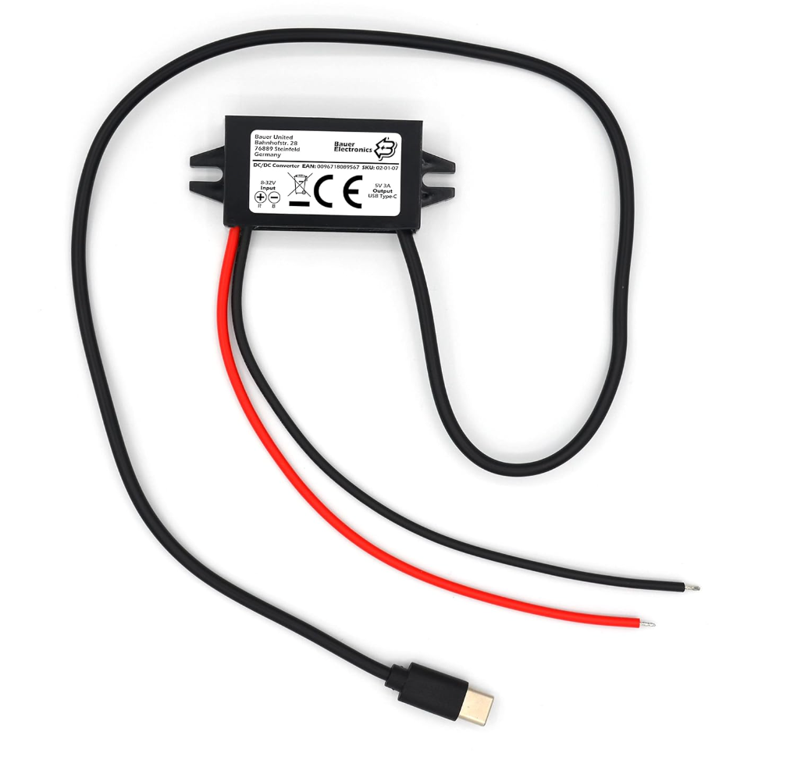
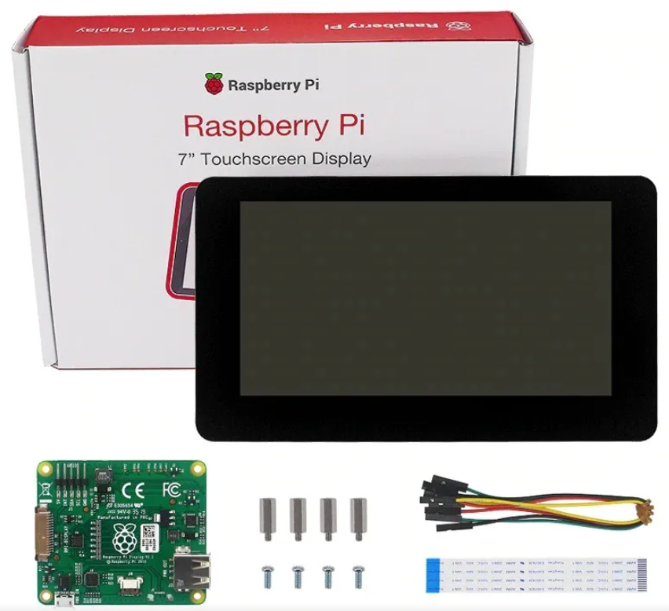

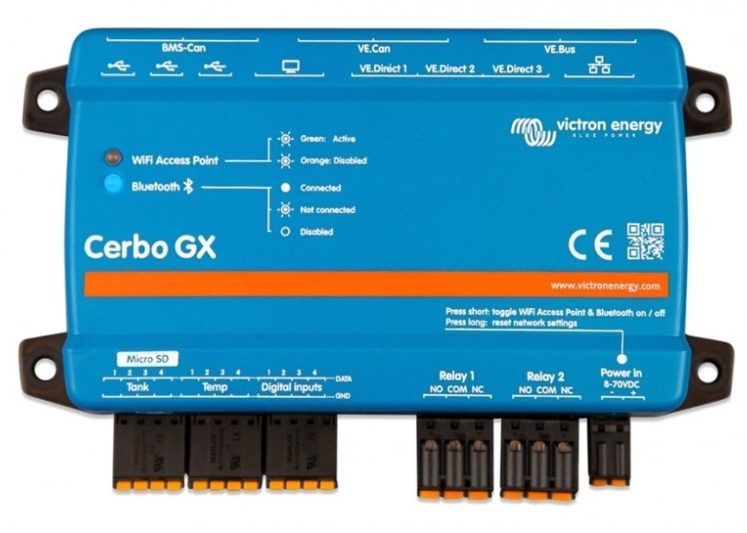
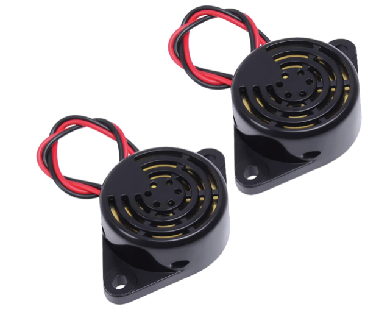
One thing easily forgotten: you need a case. Standard Pi cases won't fit once the RS485 HAT is stacked on top — the board sticks up too high. The Waveshare Industrial Grade Metal Case (~$15 on Amazon) is designed with enough internal clearance to fit the Pi with a HAT stacked on top, protects the electronics in a marine environment, and looks tidy in a nav station. Search Amazon for "Waveshare industrial metal case Raspberry Pi."
The single decision that trips people up is the instrument interface, because it depends on how old your boat's electronics are. That's the next step.
The interface board — Waveshare RS485 CAN HAT
The Raspberry Pi has no marine-network port of its own. You add a small board that stacks directly onto its GPIO pins: the Waveshare RS485 CAN HAT (~€15–25 on Amazon or AliExpress). This is the board running on S/V Oroboro and the one this guide is written around.
Despite the name, this board has two completely separate interfaces on it — a CAN bus side and an RS485 side. You use one or the other depending on how old your boat's instruments are. Both are labelled clearly on the board.
Modern boat (NMEA 2000 or Raymarine SeaTalkNG) — use the CAN side
If your instruments are connected via a backbone cable with T-connectors — that's NMEA 2000 (or Raymarine's version of it, SeaTalkNG, which is electrically identical). Use the H and L terminals on the HAT.
The easiest cable to buy is a Raymarine SeaTalkNG → NMEA 2000 adapter (e.g. A06045 / A06075 type, ~€20–25). It has a SeaTalkNG plug on one end and a DeviceNet male on the other — so one purchase covers both backbone types: plug whichever end fits your backbone into a spare T-connector, cut the cable in the middle, and wire the cut end's two data wires to the HAT. The unused half is a spare. Connect two wires:
# SeaTalkNG / NMEA 2000 drop cable → CAN side of the HAT white → H terminal blue → L terminal # Leave red (12V) and black (GND) disconnected — power the Pi separately # Wire colours vary by brand — check your manufacturer's pinout if unsure
Raymarine's SeaTalkNG backbone carries exactly the same CAN bus signals as standard NMEA 2000. The only difference is the physical connector. So when you cut a SeaTalkNG drop cable and wire white to H and blue to L, you are connecting to the CAN bus — and it works perfectly. No conversion needed, just a cut cable.
Older boat (NMEA 0183 or Seatalk1) — use the RS485 side
If your instruments use daisy-chained cables with yellow Seatalk connectors, or individual wires to each instrument, that's the older NMEA 0183 / Seatalk1 world. Use the A and B terminals on the HAT.
# NMEA 0183 talker → RS485 side of the HAT TX+ → A terminal (receive channel) TX- → B terminal # Termination resistor jumpers must be set to OFF for NMEA 0183
Mixed fleet?
If you have both old and new instruments, the Waveshare HAT handles both simultaneously — CAN side for the NMEA 2000 backbone, RS485 side for any legacy NMEA 0183 talkers. One board, one solution.
| Your network | Terminals to use | Wire colours (typical) |
|---|---|---|
| NMEA 2000 / SeaTalkNG / SimNet | H and L (CAN side) | white → H, blue → L |
| NMEA 0183 / Seatalk1 | A and B (RS485 side) | TX+ → A, TX- → B |
How everything connects
The shape of the system, start to finish:
boat instruments ─┐
Victron gear ─────┤→ NMEA 2000 backbone → CAN HAT → Raspberry Pi
AIS / GPS ────────┘ │
Signal K (reads it all)
│
┌──────────────┼──────────────┐
this dashboard InfluxDB anchor-api
(the panel) + Grafana (24/7 watch)
(history)
boat instruments ─┐
Victron gear ──────┤
AIS / GPS ─────────┘
│
NMEA 2000 backbone
│
CAN HAT
│
Raspberry Pi
│
Signal K
┌──────┼──────┐
panel InfluxDB anchor
Grafana watch
(history) (24/7)
Signal K is the translator: it reads every device on the backbone and republishes it in one common format. The dashboard, the history database, and the anchor/AIS watchdog all read from Signal K. A small WiFi router ties it together so your phone and cockpit tablet see the same panel.
Work on the Pi from your laptop
The touchscreen mounts on the bulkhead and the Pi hides behind it. There is no keyboard. Every command in this guide is run from your laptop over the boat's WiFi — not on the screen itself. Two tools make that possible: SSH for the terminal and VNC for the desktop when you need to see the GUI.
Enable SSH and WiFi at flash time
Before you remove the microSD card from your laptop after flashing, open Raspberry Pi Imager, click the gear icon (⚙) in the bottom-right corner, and configure:
- Enable SSH — tick it, choose "Use password authentication"
- Set a username and password (e.g.
piand a strong passphrase) - Configure WiFi — enter your boat router's SSID and password
With those set, the Pi joins your WiFi and accepts SSH connections the moment it first boots — no keyboard, no monitor needed.
Connect via SSH
On Mac or Linux, open a terminal. Before the static IP is set, mDNS usually resolves the hostname:
ssh pi@raspberrypi.local
Once you have a fixed IP (next steps), use that instead:
ssh pi@192.168.1.238
Windows: PowerShell has ssh built in — same commands, no extra software needed.
Enable VNC for graphical tasks
A few tasks — kiosk browser setup, touchscreen rotation — are easier with a full desktop. Enable VNC from your SSH session:
# run in your SSH session on the Pi
sudo raspi-config
Navigate to Interface Options → VNC → Enable. Then download RealVNC Viewer (free, Mac / Windows / iPad) and connect to the Pi's IP address. Use VNC when you need to see the desktop; use SSH for everything else.
Open a terminal on your laptop, SSH into the Pi, and paste commands there. The touchscreen is for sailing — not for building.
Install OpenPlotter
OpenPlotter is a ready-made Raspberry Pi image with Signal K already aboard — the fastest way to a working marine server. Flash it to the microSD card with Raspberry Pi Imager, boot the Pi, and you have Signal K running.
- Download OpenPlotter and flash it to the SD card
- Boot the Pi, connect it to your WiFi router
- Open Signal K's admin panel in a browser at the Pi's address, port 3000
- Add your CAN (or 0183) connection so Signal K starts seeing instruments
When the Signal K Data Browser shows wind, depth, and position updating, your hardware half is done.
Give the Pi (and Cerbo) a static IP
Dashboard bookmarks, the anchor-api service, SSH shortcuts, and the Signal K → Cerbo MQTT plugin all point at a fixed address. If the IP changes after a reboot, things silently break. Fix it once now.
Preferred — DHCP reservation on the router
Log into your router's admin page (usually 192.168.1.1 or 192.168.0.1). Find the DHCP client list, spot the Pi by hostname (raspberrypi), and reserve its current IP permanently. This survives Pi OS reinstalls and is the one place to manage network addresses. If you're not sure where to find it, search "your router model DHCP reservation".
Fallback — static IP on the Pi itself (Raspberry Pi OS Bookworm)
Bookworm uses NetworkManager. From your SSH session:
# list connections and find your WiFi connection name nmcli con show # apply static IP — replace "preconfigured" if your connection has a different name sudo nmcli con mod "preconfigured" ipv4.method manual ipv4.addresses 192.168.1.238/24 ipv4.gateway 192.168.1.1 ipv4.dns "8.8.8.8 8.8.4.4" sudo nmcli con up "preconfigured"
Replace 192.168.1.238 with your chosen address and 192.168.1.1 with your router's IP.
Do the same for the Cerbo GX
Reserve the Cerbo's IP on the router too — the MQTT plugin hardcodes it. Find the Cerbo's current IP at Settings → Ethernet (or WiFi) on the Cerbo screen, then reserve that address in the router the same way.
The network picture
The router is the hub of the whole system. The Pi, the Cerbo, your phone, and any cockpit tablet must all be on the same WiFi network. The most common "no data on the dashboard" complaint comes from devices on different networks — typically the Cerbo connected to its own access point while the Pi is on boat WiFi.
[instruments/N2K] ──CAN HAT──▶ [Raspberry Pi] ──WiFi──▶ [boat router] ◀──WiFi/eth── [Cerbo GX]
│
phones / tablet / laptop (dashboard · SSH · VNC)
[instruments/N2K]
│ CAN HAT
[Raspberry Pi]
│ WiFi
[boat router] ◀── [Cerbo GX]
│
phones / laptop
(dashboard · SSH)
Before moving on, confirm:
- Pi is on the boat router's WiFi ✓
- Cerbo is on the same network (WiFi or wired to the router) ✓
- Pi IP reserved at
192.168.1.238(or your chosen address) ✓ - Cerbo IP reserved ✓
- Cerbo MQTT enabled: Settings → Services → MQTT on LAN ✓
- Signal K MQTT plugin will point at the Cerbo's reserved IP (configured next step) ✓
A short patch cable from the Cerbo to the router is more reliable than WiFi inside a locker. If the run is easy, do it — WiFi works fine when you can't.
Connect your Victron system
Victron gear doesn't speak NMEA 2000 — it has its own proprietary communication system called VE.Direct, a simple serial protocol that runs over a small cable with a dedicated plug on each Victron device (MPPT solar controllers, battery monitors, inverter/chargers). To get battery and solar data into Signal K and onto the dashboard, you need to bridge that VE.Direct data across to the Pi. There are three ways depending on what Victron hardware you already have:
Option A — You already have a Victron Cerbo GX (or other GX device)
The Cerbo GX is Victron's own monitoring hub — it collects data from all your Victron devices via VE.Direct cables plugged directly into it, and can share that data over your local network using a standard protocol called MQTT. Signal K has a built-in plugin that reads MQTT, so the Pi just listens and picks up everything — battery state, solar yield, loads, inverter status. Enable MQTT on the Cerbo (Settings → Services → MQTT on LAN), install the Signal K MQTT plugin, and point it at the Cerbo's IP address. No extra hardware needed.
Option B — No GX device: run Venus OS on a second Pi
Venus OS is Victron's open-source operating system — the same software that runs on a Cerbo — and Victron officially supports running it on a Raspberry Pi. You plug your VE.Direct cables from each Victron device into the second Pi via cheap VE.Direct-to-USB adapters (~€15–20 each), and that Pi acts as a Cerbo substitute. It then shares data over MQTT exactly as in Option A. This is the path if you don't want to buy a Cerbo (€200+) and are happy running a second small Pi.
Option C — VE.Direct-to-USB directly into the OpenPlotter Pi
This is the simplest and cheapest option if you only have one or two Victron devices (say, a single MPPT controller and a SmartShunt battery monitor). Each Victron device has a VE.Direct port — a small socket on the side. You buy a VE.Direct-to-USB cable (~€15–20 per device), plug one end into the Victron device and the other end into a USB port on your OpenPlotter Pi. Signal K's Victron plugin then reads each device directly. No Cerbo, no second Pi, no MQTT — just a cable per device. The limitation: each device needs its own cable and USB port, and if you have many Victron devices it becomes unwieldy. For one or two devices it's perfect.
Have a Cerbo already? → Option A, easiest path, ten minutes of configuration.
No Cerbo, three or more Victron devices? → Option B, a second Pi with Venus OS.
No Cerbo, one or two devices? → Option C, a USB cable per device, done.
The README's "you don't need a Cerbo" section covers each path in detail with the exact plugin names and settings.
Deploy the dashboard files
The dashboard is a set of HTML files that Signal K serves. Put them in Signal K's public folder and open them in a browser. The repo's README gives the exact copy commands; the essence:
# on the Pi — fetch each page into Signal K's public folder
sudo wget -O /usr/lib/node_modules/signalk-server/public/oroboro.html \
https://raw.githubusercontent.com/fpugliano/oroboro-dashboard/main/oroboro.html
Repeat for each page — anchor.html, polar.html, settings.html, and the logo. Then open http://YOUR-PI-IP:3000/oroboro.html and the panel appears.
Anchor & Guardian background service
The anchor watch and the AIS Guardian run as a small always-on service on the Pi — anchor-api.js — so alarms reach your phone even when no browser is open. Install it to /home/pi/anchor-api/ and register it with systemd so it starts on boot and restarts itself.
# after copying anchor-api.js to the Pi sudo systemctl restart anchor-api sudo systemctl status anchor-api # expect: active (running)
This service is what makes the safety features real: it watches your swing and every AIS vessel around you 24/7, and pushes alarms whether you're at the helm, asleep, or ashore.
External anchor alarm buzzer
Phone alarms fail when you most need them: dead battery, silent mode, left in the cockpit, forgotten below. A 12 V piezo siren wired to the Pi wakes the crew regardless — a physical alarm inside the boat that sounds whether any phone is charged or not. It runs off the same 24/7 anchor-api service, needs no browser open, and costs around €15.
Parts
- 12 V piezo siren, continuous tone, ≥100 dB — ~€8–15
- 5 V relay module (or MOSFET board) — ~€5
Cheap listings often quote dB at 10 cm, not 1 m — a "90 dB" mini buzzer can be barely audible through a cabin door. For wake-from-sleep duty aim for a piezo siren rated ≥100 dB, and mount it inside the cabin near the berth. You want continuous tone specifically — the software generates the beep patterns on top of it.
Wiring
# GPIO HIGH = relay closes = buzzer sounds
Pi BCM 17 (pin 11) ──▶ relay IN
Relay NO ──▶ buzzer + (switched by relay)
12 V + ──▶ relay COM
Buzzer − ──▶ 12 V GND
# GPIO HIGH = sounding
Pi BCM 17 ──▶ relay IN
Relay NO ──▶ buzzer +
12 V + ──▶ relay COM
Buzzer − ──▶ 12 V GND
Use any 3.3 V-compatible 5 V relay module (HiLetgo SRD-05VDC-SL-C or equivalent). The relay switches the 12 V circuit; the Pi GPIO only sees a low-voltage control signal. Full wiring and GPIO permissions setup are in the repo README.
Alarm behaviour
The software generates distinct patterns so you know at a glance why it's sounding:
- Anchor drag or GPS loss — urgent 3 × 150 ms bursts + 700 ms pause, loops until silenced
- Guardian zone breach — slow 800 ms on / 800 ms off
- Both active at once — drag pattern wins
While the buzzer is sounding, a large SILENCE button appears on the anchor page. Pressing it stops the sound immediately — the visual alarm (red banner) stays active. The buzzer re-arms automatically after rearmSeconds (default 30 s), and re-arms immediately if the drag distance gets worse. Pushover phone notifications continue independently whether the buzzer is silenced or not.
Configuration
# /home/pi/anchor-api/anchor-api-config.json "buzzer": { "enabled": false, // set to true to activate "gpioPin": 17, // BCM pin (physical pin 11) "rearmSeconds": 30, // seconds until buzzer re-arms after Silence "rearmOnWorsening": true // re-arm immediately if drag distance increases }
The feature is off by default — existing installs without a buzzer are unaffected. After editing the config, restart the service:
sudo systemctl restart anchor-api
sudo journalctl -u anchor-api -n 10 # look for: [buzzer] GPIO BCM17 ready
Settings → Alarms has a Test buzzer button — it plays the drag pattern for 3 s. Run the test the afternoon before your first night at anchor with it enabled. Better yet: do a while-you're-asleep drill with a crew member watching. An alarm you've never heard is an alarm you won't trust.
History & polar performance
For graphs over time and the sailing-performance analyzer, add InfluxDB (stores the data) and Grafana (draws the history graphs). Signal K's InfluxDB plugin logs everything; Grafana visualises it; the polar page reads back your speed-vs-wind history to score your sailing. The README covers the tokens and settings step by step.
Configure your boat's specifics
One file, config.js, holds your boat's details — network addresses, your Pushover keys, your polar targets. It stays on the Pi and never goes into the public repo, so your secrets are yours. Set it once and the whole dashboard picks it up.
Phone alarms with Pushover
Anchor-drag and Guardian alarms reach your phone via Pushover — a one-time small purchase, no subscription. Create an account, paste your user and API keys into the Pi's config, and the background service does the rest. Because the alarm is sent from the Pi, it works as long as the Pi has internet — even with your phone locked and every browser closed.
See it from anywhere
Add Tailscale (free tier) and the Pi joins a private network you can reach from your phone anywhere with signal — no port-forwarding, no exposed ports. Check your batteries from the beach, watch the anchor hold from dinner ashore. The anchor and Guardian alarms run independently on the Pi regardless, so they protect the boat whether or not you're connected.
Frequently asked questions
Why a Raspberry Pi and not an ESP32?
An ESP32 (even with SD-card logging) is a great NMEA-to-WiFi bridge: live gauges on your phone, a track log, even a basic anchor alarm — cheaper, lower power, and if that's all you need there are ready-made projects for it. What an ESP32 can't be is the boat's computer. Signal K's plugin ecosystem, InfluxDB + Grafana history you can actually query ("show me wind and battery voltage overnight"), Tailscale remote access, and a wall-mounted touchscreen kiosk all need Linux. Two different products for two different jobs — this guide is for the second one.
They coexist happily. ESP32s make great cheap sensor nodes — tank senders, bilge monitors, temperature probes — feeding data into Signal K over WiFi via SensESP. The Pi is the hub; tiny microcontrollers are the leaves.
Can I skip the buzzer — is the phone alarm enough?
For many sailors, yes. Pushover is reliable and reaches you ashore. Skip the buzzer until you've used the system for a season and decided you want the extra assurance. The case for adding it is simple: phones die, go silent, get left in the cockpit. A buzzer inside the cabin is the backup that doesn't depend on anyone's battery. See External anchor alarm buzzer above for parts, wiring, and configuration.
You're done — go sailing
That's the whole build: a Raspberry Pi reading your entire boat, a clean panel on any screen, a 24/7 anchor and collision watch in your pocket, and performance analysis that turns every sail into data. All of it yours, all of it free, none of it locked to anyone's cloud.
Hit a snag, or built something you're proud of? Open an issue on GitHub — the project is alive and the fleet is growing.